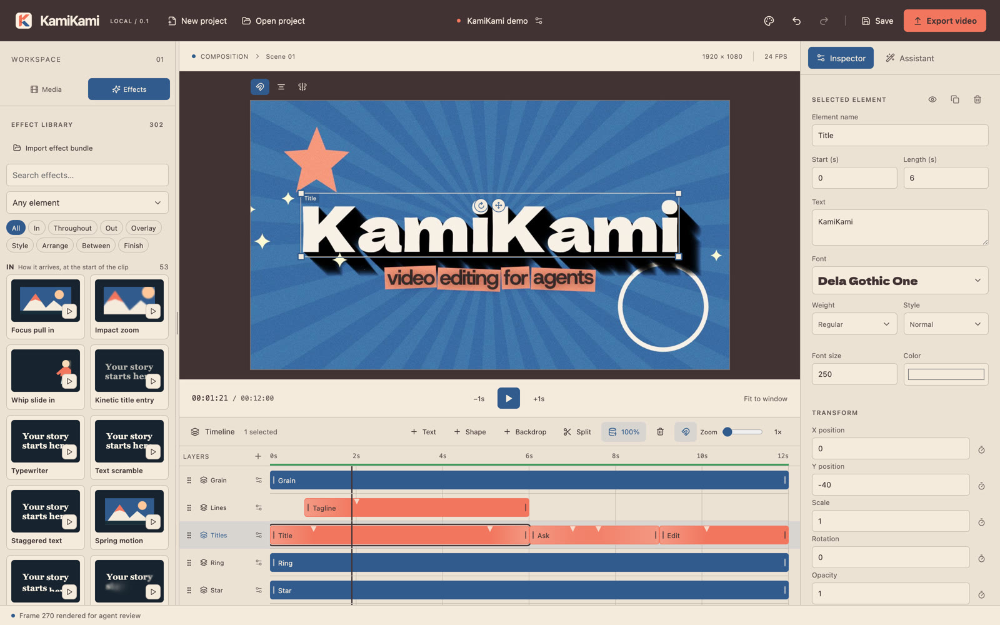
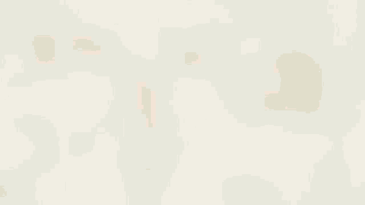

Agents edit the timeline you see
A full MCP toolset: import media, cut and trim, place titles, apply effects, set keyframes and export. You watch it happen and can undo any step.

KamiKamiOpen source · Local · MCP
KamiKami is a real timeline editor built for AI agents. Tell Claude Code, Codex or any MCP client what you want, and watch it cut, title and animate your video while you stay in control of every frame.
Apple Silicon · macOS 12 or later · Free and MIT licensed
How it works
One app with everything inside: the editor, the renderer and the MCP server. No Node, Python or Homebrew.
Run one command, or copy it from Assistant settings → Agent apps in the app.
claude mcp add --transport stdio --scope user kamikami -- /Applications/KamiKami.app/Contents/Resources/bin/kamikami-mcp
Codex, Claude Desktop, Cursor and other MCP clients work too; see the setup guide.
“Cut these clips to the beat of the song, add a bold title, and give it a warm film look.”
Every change lands on the open timeline, in your undo history.
Features
A full MCP toolset: import media, cut and trim, place titles, apply effects, set keyframes and export. You watch it happen and can undo any step.
They render exact frames and timeline ranges, look through your footage, and verify the result before they say it's done.
Kinetic type, title animations, hand-drawn annotations, comic and broadcast overlays, film grain and light leaks, organized by what they do.
Every effect is a declarative recipe, so agents can find, tune and write new ones safely. Share them as portable bundles.
Effects are pure functions of the frame. Idle time renders the timeline with the export renderer, so playback shows the final video.
Your media and projects stay on your Mac. Nothing leaves it unless you connect an AI provider for the built-in assistant or media analysis.

Effect packs
Effect packs bundle a whole visual style into one file. Import it into KamiKami and your agent can use every effect in it right away.

Risograph printing for video. Pictures and type separate into spot-ink halftone plates, print a little out of register on warm paper, and overprint into their darks. Plus halftone washes behind your titles.
14 effects: blue and pink, teal and orange, mono and three-ink prints; shaky press; print in; overprint and screened gradient type; ink in and out; halftone sun, horizon, corner and halo.
Free to use and share · Needs KamiKami 0.2 or later
To share your own, choose Export effects: it saves any of your effects as one pack file.
Install
Requires an Apple Silicon Mac (M1 or later) with macOS 12 or later. Windows and Linux are on the roadmap. Prefer to build it yourself? See Build from source.